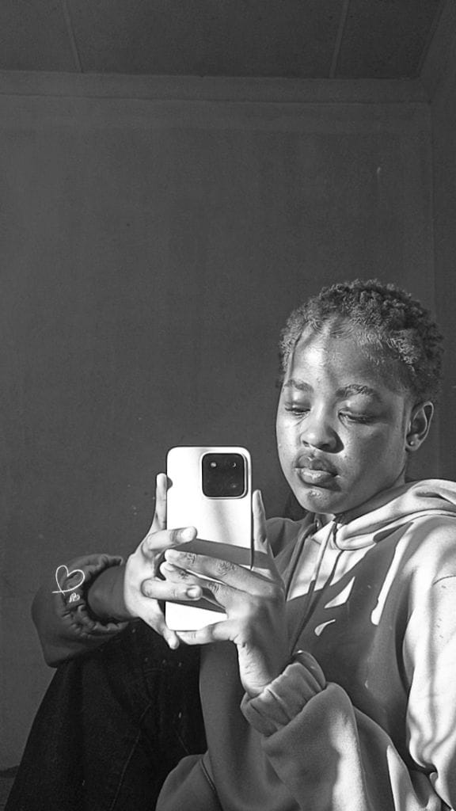

About
The story so far.
A fashion, beauty, and lifestyle model and content creator building a body of work one shoot, campaign, and collaboration at a time.

Bio
- Focus
- Fashion, beauty, lifestyle
- Represents
- Azhyre Tech, Azhyre Fashion, SerenQ
- Available For
- Bookings, collaborations, campaigns
Quinn approaches every shoot with the same question: what does this brand want to be remembered for? That editorial instinct, considered, warm, and unafraid of color, is what she brings to fashion, beauty, and lifestyle work alike.
Beyond modeling, she creates content and represents brands as an ambassador, most recently across Azhyre Tech, Azhyre Fashion, and SerenQ, work spanning campaign imagery, social content, and in-person appearances.
Off camera, she's building a portfolio that reflects range: polished editorial one day, unscripted lifestyle content the next, always with the same point of view.
Where I Create
Fashion
Editorial and campaign work, from lookbooks to runway-adjacent content.
Beauty
Close-up beauty and skincare content built around texture, light, and color.
Lifestyle
Everyday content that carries the same editorial eye into real settings.
Let's create something with intention.
For bookings, collaborations, and brand partnerships, reach out. I'd love to hear the vision.
Work With Me